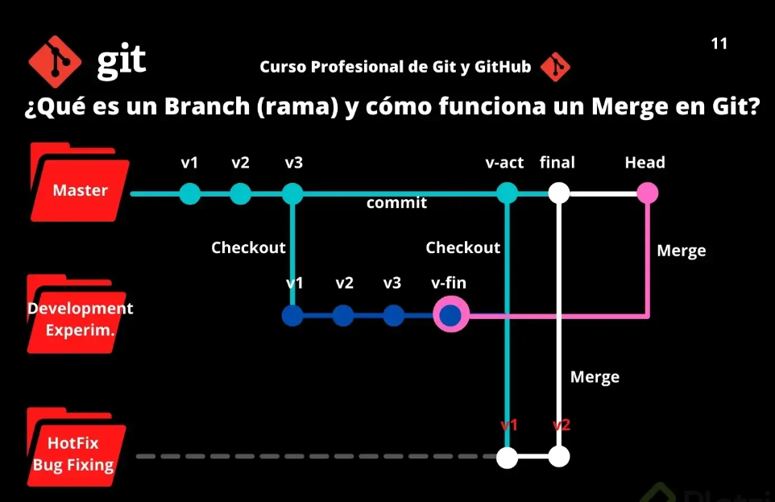

Hola, soy Jeferson Cataño, estudiante de primer semestre de Ingeniería de Software y Datos
en la Universidad IU Digital de Antioquia. Este blog es un proyecto personal que he decidido desarrollar
en el marco de la asignatura Introducción a la Ingeniería de Software y Datos.
¿Qué encontrarán en este blog?
A lo largo de este semestre, iré compartiendo mis experiencias, aprendizajes,
y reflexiones mientras avanzo en mi formación como ingeniero. Aquí podrán encontrar:
publicación de entradas
Proyectos prácticos en los que aplicaré los conocimientos adquiridos
Retos y soluciones que enfrentaré durante el desarrollo de la asignatura.
Requerimientos de la asignatura
Objetivo del blog:
Mi objetivo principal con este blog es documentar mi proceso de aprendizaje,
así como servir de recurso para otros estudiantes que estén interesados en el
campo de la Ingeniería de Software y Datos. Además, quiero utilizar este espacio
para plasmar mi crecimiento académico y profesional, de manera que al final del semestre,
pueda tener un registro claro de mi evolución.
Los invito a seguirme en este viaje de descubrimiento y aprendizaje. Estoy seguro de que
será una experiencia enriquecedora, llena de desafíos y logros que me acercarán cada vez más
a mi meta de convertirme en un ingeniero competente y apasionado.
¡Gracias por acompañarme!
Información sobre el Hardware
El hardware es uno de los componentes fundamentales en el mundo de la
informática y la tecnología. Se refiere a todos los elementos físicos
que componen un sistema informático.
¿Qué es el Hardware?
El hardware es el conjunto de componentes físicos que forman parte de un
sistema informático. Estos componentes incluyen todas las partes tangibles
que puedes tocar, como la unidad central de procesamiento (CPU), la memoria,
los dispositivos de almacenamiento, los periféricos y otros dispositivos electrónicos.
Tipos de Hardware
1. Hardware Básico
Procesador (CPU): Es el cerebro del ordenador,
encargado de ejecutar las instrucciones de los programas.
Memoria RAM: Es la memoria de acceso aleatorio
donde se almacenan temporalmente los datos que el procesador necesita acceder rápidamente.
Placa Base (Motherboard): Es la tarjeta principal del
sistema que conecta todos los componentes entre sí.
Disco Duro (HDD/SSD): Es el dispositivo de almacenamiento donde se guardan los datos
de forma permanente.
Fuente de Alimentación: Proporciona la energía necesaria a todos los componentes del sistema.
2. Hardware Periférico
Teclado y Ratón: Dispositivos de entrada que permiten la interacción con el ordenador.
Monitor: Dispositivo de salida que muestra la información visual al usuario.
Impresora: Dispositivo de salida que permite imprimir documentos físicos.
Altavoces y Micrófono: Dispositivos de entrada y salida de audio.
3. Hardware de Almacenamiento
Unidades de Estado Sólido (SSD): Dispositivos de almacenamiento más rápidos
y duraderos que los discos duros tradicionales.
Discos Duros (HDD): Dispositivos de almacenamiento
que usan platos magnéticos para guardar datos.
Unidades Flash (USB): Dispositivos portátiles para almacenar y transferir datos.
4. Hardware de Red
Tarjeta de Red: Componente que permite la conexión de un ordenador a una red.
Router: Dispositivo que dirige el tráfico de datos entre redes, como Internet y una red local.
Switch: Dispositivo que conecta varios dispositivos dentro de una misma red.
Evolución del Hardware
El hardware ha evolucionado rápidamente en las últimas décadas, con mejoras significativas en la velocidad,
capacidad y eficiencia energética. Los procesadores son cada vez más potentes, los dispositivos de almacenamiento
más rápidos y compactos, y los periféricos más inteligentes y conectados.
Importancia del Hardware
El hardware es esencial para el funcionamiento de cualquier sistema informático. Sin él,
no sería posible ejecutar software, procesar información ni interactuar con dispositivos digitales.
Además, la calidad y capacidad del hardware determinan en gran medida el rendimiento de un sistema y su
capacidad para manejar tareas complejas.
Tendencias Actuales en Hardware
Computación en la Nube: Mucho del procesamiento y almacenamiento de datos se está moviendo a
la nube, reduciendo la necesidad de hardware potente en dispositivos individuales.
Internet de las Cosas (IoT): La proliferación de dispositivos conectados está
impulsando el desarrollo de hardware más pequeño y eficiente.
Inteligencia Artificial: Los avances en IA están llevando a la creación de
hardware especializado, como las unidades de procesamiento tensorial (TPU).
Conclusión
El hardware es una parte crucial de la tecnología moderna, y su desarrollo continuo es clave
para la innovación en todos los campos de la informática. Desde el ordenador personal hasta
los servidores en la nube, el hardware sigue siendo el pilar sobre el que se construyen los avances tecnológicos.
Fundamentos de Git: Desde la Inicialización Local hasta la Colaboración en Repositorios Remotos
En el mundo del desarrollo de software, el manejo eficiente del control de versiones es esencial para colaborar y mantener un proyecto de manera
organizada. Git, una de las herramientas más populares para este fin, nos permite gestionar cambios en nuestro código de forma efectiva. En esta ocasión,
exploraremos algunos de los aspectos clave para trabajar con Git, desde la inicialización de un repositorio local, hasta la creación de branches y la conexión
con repositorios remotos.
Primero, veremos cómo crear un repositorio local, que es el primer paso para comenzar a controlar nuestro código. Luego, hablaremos sobre la creación de ramas o 'branches',
que son fundamentales para trabajar en nuevas funcionalidades o correcciones sin afectar el código principal. Finalmente, aprenderemos a conectar nuestro repositorio local a uno remoto en plataformas
como GitHub, lo que nos permitirá colaborar con otros desarrolladores y mantener nuestro código sincronizado en la nube.
Cada uno de estos pasos se complementa con comandos prácticos que nos ayudarán a entender no solo cómo hacerlo, sino también el propósito detrás de cada acción en el flujo de trabajo con Git.:
Inicialización del repositorio localmente
La inicialización de un repositorio local es el primer paso para comenzar a trabajar con Git en un proyecto. Este proceso crea una estructura de directorios oculta (llamada .git) en el proyecto, la cual Git utilizará para rastrear los cambios.
A continuación, te explico el proceso con detalle, y cómo puedes usar etiquetas HTML, por ejemplo, un div para explicar los comandos relevantes:
Pasos para inicializar un repositorio local en Git:
1. Crea o navega al directorio de tu proyecto.
Si ya tienes un proyecto, simplemente navega hasta el directorio usando la terminal o línea de comandos:
cd /ruta/de/tu/proyecto
Inicializa el repositorio de Git.
Ejecuta el siguiente comando en la terminal para inicializar un nuevo repositorio
de Git en el directorio:
git init
Este comando crea una carpeta oculta llamada .git en el directorio de tu proyecto. Esa carpeta contiene
todos los archivos y la información que Git necesita para gestionar el repositorio.
3. Añade archivos al repositorio.
Una vez inicializado el repositorio, puedes agregar archivos para que Git comience a rastrearlos.
Utiliza el comando git add para agregar archivos:
git add .
El punto (.) indica que quieres agregar todos los archivos en el directorio actual al área de preparación (staging area).
4. Realiza un commit inicial.
Una vez que los archivos están en el área de preparación,
puedes confirmar los cambios con un commit:
git commit -m "Primer commit"
Creación de branches
Las ramas (branches) en Git: Qué son y cómo utilizarlas correctamente
En el desarrollo de software, es muy común que trabajemos en diferentes funcionalidades, correcciones o mejoras al mismo tiempo, sin querer afectar el código principal de nuestro
proyecto. Aquí es donde las ramas, o branches, en Git juegan un papel crucial
¿Qué es una rama (branch)?
Una rama o branch es una versión del código del proyecto sobre el que estás trabajando. Estas ramas ayudan a mantener el orden en el control de versiones y manipular el código de forma segura.
En otras palabras, un branch o rama en Git es una rama que proviene de otra. Imagina un árbol, que tiene una rama gruesa, y otra más fina, en la rama más gruesa tenemos los commits principales y
en la rama fina tenemos otros commits que pueden ser de hotfix, devlopment entre otros.

Clases de branches o ramas en Git
Rama main (Master): Por defecto, el proyecto se crea en una rama llamada Main (anteriormente conocida como Master). Cada vez que añades código y guardas los cambios, estás haciendo un commit, que es añadir el nuevo código a una rama.
Esto genera nuevas versiones de esta rama o branch, hasta llegar a la versión actual de la rama Main.
2. Rama development Cuando decides hacer experimentos, puedes generar ramas experimentales (usualmente llamadas development), que están basadas en alguna rama main, pero sobre las cuales puedes hacer cambios a tu gusto sin necesidad
de afectar directamente al código principal.
3. Rama hotfix: En otros casos, si encuentras un bug o error de código en la rama Main (que afecta al proyecto en producción), tendrás que crear una nueva rama (que usualmente se llaman bug fixing o hot fix) para hacer los arreglos necesarios. Cuando los cambios estén listos, los tendrás que fusionar con la rama Main para que los cambios sean aplicados. Para esto, se usa un comando llamado Merge, que mezcla los cambios de la rama que originaste a la rama Main.
Todos los commits se aplican sobre una rama. Por defecto, siempre empezamos en la rama Main (pero puedes cambiarle el nombre si no te gusta) y generamos nuevas ramas, a partir de esta, para crear flujos de trabajo independientes.
Cómo crear una rama en Git
El comando git branch permite crear una rama nueva. Si quieres empezar a trabajar en una nueva función, puedes crear una rama nueva a partir de la rama master con git branch new_branch. Una vez creada, puedes usar git checkout new_branch para cambiar a esa rama.
Recuerda que todas tus versiones salen de la rama principal o Master y de allí puedes tomar una versión específica para crear otra rama de versiones.
Vamos a seguir el siguiente ejemplo:
Para crear una nueva rama, utiliza el comando:
git branch nombre-de-la-rama"
Esto simplemente crea una rama nueva, pero no cambia tu trabajo actual a esa rama.
Imagina que creaste una rama llamada feature-nueva.
Cambiarse a la nueva rama
Para empezar a trabajar en la nueva rama, debes "moverte" a ella con el siguiente comando:
git checkout nombre-de-la-rama"
O también puedes crear y moverte a la nueva rama en un solo paso con:
git checkout -b nombre-de-la-rama"
Siguiendo con nuestro ejemplo, usarías:
git checkout nombre-de-la-rama"
Con este comando, has creado la rama y ahora estás listo para trabajar en feature-nueva.
Realiza tus cambios y confirma (commit)
Una vez en la nueva rama, puedes empezar a hacer tus cambios, agregar archivos y hacer commits de manera normal:
git add archivo-modificado
git commit -m "Mensaje describiendo los cambios"
Fusionar ramas (merge)
Cuando hayas terminado de trabajar en tu nueva funcionalidad o corrección, lo más común es fusionar (merge) los cambios de tu rama con la rama principal (main o master).
Para ello, primero asegúrate de estar en la rama principal:
git checkout main"
Luego, puedes fusionar los cambios de la rama feature-nueva con el siguiente comando:
git merge feature-nueva"
Si todo va bien, tus cambios se integrarán en la rama principal.
Ejemplo práctico: Imagina que estás desarrollando una
nueva funcionalidad en tu aplicación, pero no quieres afectar la versión estable de tu proyecto
que está en la rama principal (main). Sigues estos pasos:
1. Creas una nueva rama nueva-funcionalidad:
git checkout -b nueva-funcionalidad
2. los cambios en tu código, los confirmas y sigues trabajando.
3. Cuando la nueva funcionalidad está lista, cambias a la rama principal:
git checkout main
4. Fusionas la nueva funcionalidad:
git checkout main
Y listo, tu nueva funcionalidad está ahora en la versión principal del proyecto sin
haber interferido con el trabajo anterio
Conclusión
Las ramas en Git son una herramienta poderosa para mantener el orden y la seguridad en tu proyecto, permitiéndote trabajar en varias cosas a la vez sin correr el riesgo de dañar el código que ya funciona. Usar ramas correctamente facilita la colaboración y asegura que las nuevas características o correcciones estén bien
probadas antes de integrarse en la versión principal del proyecto.
Conectar un Repositorio Local con un Repositorio Remoto: Instrucciones Paso a Paso
Cuando trabajas con Git, una de las tareas más comunes es sincronizar tu trabajo local con un repositorio remoto, como los que se alojan en plataformas como GitHub, GitLab o Bitbucket. Esta conexión te permite almacenar tu código en la nube, colaborar con otros desarrolladores y hacer un seguimiento
de los cambios de manera centralizada.
¿Qué es un repositorio remoto?
Un repositorio remoto es simplemente una copia de tu repositorio local que se aloja en un servidor externo, como GitHub. Este repositorio remoto te permite acceder a tu código desde
cualquier lugar y compartirlo con otros colaboradores.
¿Por qué es importante conectar el repositorio local con uno remoto?
Colaboración: Permite que varios desarrolladores trabajen juntos, ya que pueden clonar el repositorio remoto y hacer cambios desde sus propios dispositivos.
Copia de seguridad: Tener el código en la nube asegura que no lo pierdas si algo le pasa a tu máquina local.
Despliegue: Muchos entornos de producción o servidores obtienen el código directamente desde repositorios remotos para desplegar las aplicaciones.
Cómo conectar un repositorio local con uno remoto
Ahora vamos a ver los pasos para conectar un repositorio local a uno remoto en GitHub. Asegúrate de haber creado un repositorio local en tu máquina y un
repositorio vacío en GitHub.
1.Inicializar tu repositorio local (si aún no lo has hecho)
Si aún no has inicializado tu repositorio local, puedes hacerlo con:
git init
Este comando crea un nuevo repositorio local en la carpeta donde estás trabajando.
2. Agregar el repositorio remoto
Una vez que tienes tu repositorio local, necesitas vincularlo con el repositorio remoto. El comando para hacer esto es git remote add. Vamos a suponer que ya creaste un repositorio vacío en GitHub llamado mi-proyecto. Para
agregar este repositorio remoto, usarías el siguiente comando: